Next: bfk - Inelastic neutron-scattering Up: ic1ion - a module Previous: Formalism Contents Index
ic1ion is prepared to do calculations of the neutron cross section going beyond the dipole approximation for the scattering cross section. The formulation of the scattering operator implemented in the functions mq and dncalc have been given by Lovesey and Balcar [29], 6.87b:
| 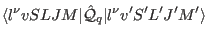 | 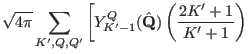 | (124) | |
| 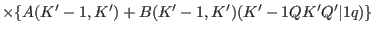 | (125) | ||
| 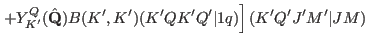 | (126) |
... these are the spherical components with 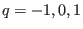, which are related to the cartesian components by
| 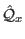 | 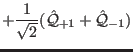 | (127) | |
| 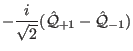 | (128) | ||
| 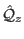 | 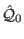 | (129) |
The coefficients 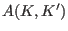 and 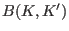 are complex to obtain, formulas will not be given here, we refer the reader to [29] and just mention, that the computation involves of 3j, 6j and 9j symbols and some fractional parentage coefficients.